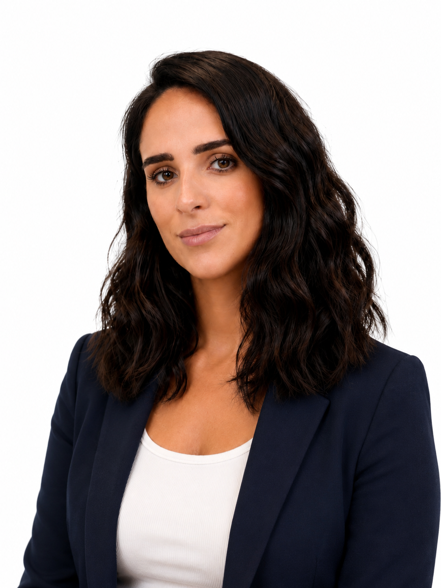

Clarify the purpose
Define the problem, the people you serve and the change you intend to create.

It took three and a half years to take Ethical Bridge from an idea to an organisation ready to launch. That experience showed me how demanding it can be to translate a meaningful vision into a clear strategy, workable systems and confident next steps.
Mission & Method brings together the frameworks, decisions and tools developed through that process, so founders can build capable, credible and sustainable organisations with greater clarity from the outset.
My work has taken me through international consulting, project administration, awards and compliance, development management, academic research and legal practice. I began my professional journey in Argentina, including experience with the Public Ministry of Defence, before contributing to organisations such as Save the Children, Lutheran World Federation, Consulting Base and AdvocAid across Argentina and South America, Australia, Europe and Africa.
I bring legal training, a Master in African Studies, experience conducting and applying academic research, fluent English, Spanish and Portuguese, and years of experience working with people, partners, systems and complex priorities.
Your ambition deserves the structure, knowledge and support required to make it real.
Mission & Method gives founders a practical route from uncertainty to a clear next step, and from a clear next step to an organisation capable of carrying its purpose.
Visit Ethical BridgeAmbitious ideas become credible organisations when purpose is translated into strategy, structure, tools, plans and decisions that can be shared, tested and improved over time.
Define the problem, the people you serve and the change you intend to create.
Turn direction into structure, tools, plans and practical next actions.
Build an organisation that is useful, ethical and sustainable.
Follow a structured sequence and create the foundations your organisation needs.
Open the Planning System